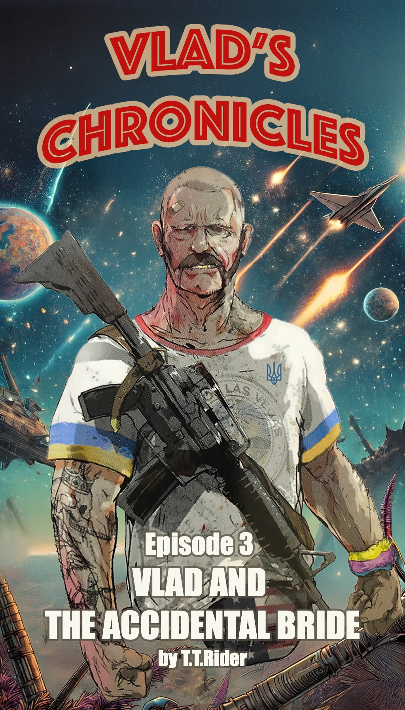

Disclaimer
The novels of Vlad’s Chronicles are an exclusive comedic journey tailored specifically for the delightful members of the Hopperverse
If you stumbled upon these adventures by accident, be warned: Vlad’s galaxy-hopping escapades, gummy-fueled rulers, and questionable fashion sense may seem more perplexing than trying to explain interstellar BBQ etiquette to aliens.
Non-club members risk bouts of laughter-induced confusion, mild existential crises, or sudden cravings for Ukrainian gorilka.
Read responsibly, and remember—without Coffee with Christopher context, Vlad’s misadventures make about as much sense as a fanny pack in space.
This novel is a wild ride of fiction!
Any names you stumble across, especially those that sound like they belong to Hopperverse members or die-hard Coffee with Christopher fans, as well as the characters, places, and shenanigans within, are purely figments of the author’s imagination—trust me, it’s a pretty bizarre place!
If you happen to see any resemblance to actual events or real people (photos included!), it’s entirely by accident—not a conspiracy!
Seriously, just dive into this chaotic world, have a blast, and keep in mind that the author is just here to sprinkle a little ridiculous fun into our otherwise serious lives.
Enjoy the laugh riot!
Vlad’s Chronicles
by T.T.Rider
Episode 3
Vlad
and
The Accidental Bride
Previously in Vlad’s Chronicles
Our hopelessly romantic, fashion-challenged hero Vlad—whose mustache alone could wrestle wild animals into submission—has been planet-hopping through space, chasing the memory of his Vegas love, Nikki. After awkwardly stumbling onto an island ruled by the gummy-addicted Big G-Nubz (where toes are optional), Vlad barely escaped with all members intact. His next stop led him straight into the saucy domain of Troy King, the reluctant BBQ monarch whose cooking skills were rivaled only by his questionable taste in attire. Still Nikki-less and slightly tipsy from suspiciously strong vodka knockoffs, Vlad blasts off once more, with a new companion in tow.
On a far-flung island on an equally distant planet—a place that looked like paradise and, truth be told, actually was—Vlad, the fearless warrior and celebrated hero of his people, sprawled out on the beach. Clad in his signature Speedo swimwear, he stared off into the horizon, lost in thought. These days, brooding seemed to come naturally to Vlad. His relentless quests to find his true love—or whatever he was calling it—had all hit dead ends. Nikki, a name as legendary as any across the known universe, remained maddeningly out of reach. Everyone had heard stories about her, but nobody could give him a clue where she might’ve disappeared.
Still, Vlad’s adventures weren’t entirely for nothing. With every expedition, he’d bring back something new to enrich life for the G-Nubz colony. Over time, things got better—so much so that some colonists even took up wearing clothes.
For now, though, Vlad relished the simple pleasure of lounging on soft sand or taking a dip in the ocean to shake off his worries. Some folks even whispered tales about catching sight of him swimming au naturel. But most chalked that up to wild gossip and let it slide.
Christopher, the village Jester, perched nearby, jotting notes in a battered notebook—one of Vlad’s many thoughtful gifts. Every so often, he’d fire off questions about Vlad’s escapades, fishing for colorful details or, if luck allowed, some scandalous tidbits of his past and present adventures. Vlad’s mind belongs to Nikki, as for other parts of his body, well, he didn’t limit himself that strongly. On good days, Vlad would humor Christopher with grand tales and exaggerated flourishes. Today wasn’t one of those days.
After yet another probing inquiry, Vlad let out a low growl of annoyance.
“Why are you so nosy? What’s all this writing about anyway?”
“I’m working on a book! I’m an author!” Christopher declared with a smug grin.
“Yeah? Then how come I’ve never read any of your so-called books?” Vlad shot back, his voice heavy with skepticism.
“Probably because I didn’t think you could read,” Christopher deadpanned, ducking just in time as Vlad hurled a stray tree branch his way.
“You never got to read any of his so-called masterpieces because Christopher here is a lazy slacker who hasn’t written squat in ages,” came the unmistakable voice of Big G-Nubz, the colony’s Wise Leader—wise, at least most of the time. “Honestly, I’m starting to wonder if he’s even worth keeping around unless he pulls it together and produces something soon.”
“Alright, alright, Boss!” Christopher shot back defensively, waving his notebook for emphasis. “See? I’m writing now! Non-stop, barely taking a breath!”
“Pick up the pace!” Big G-Nubz grumbled impatiently. “I’m done waiting. But scram for now—I need to talk to Vlad. Privately.”
Christopher got up from the tree trunk he’d been perched on and shuffled a few feet away with exaggerated reluctance. He was clearly still angling to eavesdrop. “Maybe they’ll spill something juicy for my book,” he muttered under his breath, smirking as he repositioned himself within earshot.
Big G-Nubz claimed the vacated spot on the tree trunk, turning toward Vlad with an air of gravity.
“Vlad,” he began in a low but firm tone, “we’ve got ourselves a situation.”
Vlad squinted at him, replying with mock boredom. “Oh no, you and me? Are we about to duel or something? ‘Cause honestly, I could use a little action—and the villagers could use a show.”
“No,” G-Nubz snapped back, his voice dead serious. “This isn’t about us; it’s about the whole colony. We’re in trouble unless you step up.”
“What kind of trouble?” Vlad asked lazily, though there was a flicker of curiosity in his eyes.
“I’m almost out of gummies!” G-Nubz declared, his voice trembling slightly with desperation. “And trust me—nobody wants to see what I turn into without them.”
From his snooping spot nearby, Christopher froze mid-pretend scribble, his face betraying mild shock as he absorbed every word.
“So let me guess,” Vlad drawled, leaning back casually. “You want me to go fetch some gummies for you?”
“Exactly,” G-Nubz confirmed with a sharp nod. Then, softening just slightly, he added in a barely audible voice that bordered on pleading: “Please?”
“And where am I supposed to find these magical gummies of yours?” Vlad pressed.
“Oh, I’ve got a supplier!” G-Nubz perked up instantly. “She runs her own planet—it’s only a few days’ journey away.” Leaning in conspiratorially, he added with uncharacteristic excitement: “And she might even have leads on Nikki’s whereabouts.”
Vlad’s posture shifted ever so slightly at the mention of Nikki—a subtle tension creeping into his otherwise lazy demeanor. “Who’s this supplier? And where do I find her?”
“She’s the leader of her planet,” G-Nubz explained cheerfully. “And listen—don’t underestimate her. She’s fierce and powerful… stronger than anyone you’ve met before. Stronger even than Sootriman.”
“Sootri-who?” Vlad blinked, confusion etched across his face.
“Sootriman,” G-Nubz clarified nonchalantly. “She’s not born yet… but she will be—give it another few thousand years.”
Vlad raised an eyebrow, visibly unimpressed by this cryptic comment. “And how exactly do you know all this?”
“The gummies,” G-Nubz replied matter-of-factly. “They give me powers beyond your comprehension.”
“Soo-tri-man…” Christopher whispered to himself from his not-so-stealthy hiding spot. Scribbling furiously in his notebook, he grinned and murmured under his breath: “Now that is a cool name.”
That night at dinner, Vlad announced he was setting off on yet another adventure. The villagers erupted in cheers because, without fail, every time he returned, he came back with something extraordinary. The crowd favorite? Delicious delicacies from the Troy King’s planet that had everyone drooling.
But the excitement didn’t stop there. Right after Vlad’s big reveal, Christopher boldly declared, “I’m going with Vlad!”
His words sparked a fresh wave of energy around the table—smirks were exchanged, whistles can cat-calls pierced the air, and someone even shouted, “Mazel tov!”
That odd bond between Vlad and Christopher was always the fuel for whispers and speculation. Lately, they’d been hanging out a lot, usually at the same beach where G-Nubz stumbled upon them earlier today. Naturally, no one had the guts to grill Vlad about it—his quick wit wasn’t exactly cutting enough to handle that kind of talk—but all the attention zeroed in on Christopher. The villagers, with Lynn at the helm—a fiery librarian who doubled as the island’s unofficial peacekeeper and enforcer—managed to corner Christopher one day, determined to get some answers out of him.
“Look,” Christopher tried to defend himself, “there’s nothing shady going on. We’re just friends, that’s all.”
“Yeah, sure,” Lynn shot back with a smirk. “Friends. My pal told me the exact same thing about her ‘friend’—right up until she ended up with a baby. Though, I suppose that’s not exactly a concern for you.”
“It’s not like that,” Christopher countered, trying to keep his cool. “I hang out with him because he inspires me!”
“Inspires you? Really?” Lynn wasn’t letting up. “Funny thing—our Madam mentioned that Vlad used to ‘inspire’ her girls practically every other day. But ever since this little buddy-buddy act of yours started, his visits have dropped to maybe once or twice a week.”
There was no point continuing the argument; convincing Lynn was like arguing with a storm. Christopher let the conversation fizzle out, deciding it wasn’t worth the fight.
The next morning, Vlad and Christopher set off on their journey. Overnight, however, Vlad’s spaceship had acquired some unsolicited “decoration.” Someone had scrawled “Just Married” across the back of the ship and strung a few clinking, used cans to trail behind it. Luckily, before Vlad could spot the prank, Christopher managed to clean up the mess.
After traveling for most of the day, Vlad settled in on the bridge with an old book in his hands. Suddenly, Christopher burst onto the bridge in a frantic state, shouting, “Drop to normal space! Right now!” Before Vlad could even process what was happening, Christopher slammed a button on the console, forcing the spaceship out of hyperspace. In front of them loomed a lush, green planet.
“What in the splick is going on?!” Vlad shouted in confusion. But Christopher, wild-eyed and clearly rattled, pointed at the planet and exclaimed, “There! We need to land there! You don’t hear that song?”
“Song? Have you lost your damn mind? I don’t hear anything,” Vlad replied, raising a skeptical brow.
“Trust me on this one! We have to go!” Christopher insisted, jabbing his finger at a spot on the planet’s map.
Reluctantly, Vlad gave in and followed Christopher’s navigation directions down to the surface. They touched down near a serene lakeside. Stepping off the ship into the fresh air, Christopher came alive with urgency again. He pointed ahead and yelled excitedly, “Look over there!” Before Vlad could get a word out, Christopher took off running.
Peering into the distance, Vlad could barely make out a shape—a womanly figure with wings—gliding as though moving to an unheard rhythm. As Vlad got closer, the details sharpened.
Perched atop a smooth rock near the shimmering water stood the Siren, bathed in the amber glow of the setting sun. Her long, golden waves spilled over her shoulders, catching the light with an almost otherworldly gleam. Her eyes sparkled with a mischievous intensity, and her lips curved into a knowing smile, like she held truths far beyond human understanding.
But it wasn’t just her striking appearance that drew you in—it was something deeper, almost magnetic. Her massive wings, soft plumes of white and silver, stretched elegantly behind her, gently shifting in the lazy breeze. Cradled in her delicate fingers was a golden lyre, her hands gliding across its strings like they were born to play it. Was she singing too? Vlad couldn’t tell; it felt like a haze clouded his senses. None of that seemed to matter to Christopher, though. Whatever it was he saw—or heard—pushed him forward without a second thought.
In no time, Christopher reached the mysterious figure. The moment they came together, they melted into each other’s arms, sharing a passionate kiss so electric it erased any question about their bond. As their lips broke apart, the unbelievable happened. The ethereal being from legend was suddenly gone, replaced by a petite woman clinging tightly to Christopher. Without hesitation, she seized his hand and pulled him eagerly toward the forest, not sparing even a glance behind.
Vlad stood there dumbfounded for a moment, considering whether he should follow them. In the end, he decided against it—for now at least—giving them some space while trying to make sense of what just happened.
Two hours dragged on without a hitch before Vlad’s patience wore thin. Decked out in his worn-out tee, adorned with a faded Ukrainian trident emblem, and rocking a gaudy American flag fanny pack that bounced against his hip, he geared up with every available weapon and got ready to venture into the woods to bail Christopher out of whatever crazy situation he’d gotten himself into. But just as he was about to set off, the pair emerged from the trees.
Christopher sauntered over, looking completely at ease—and lugging a few bags for good measure. By his side was the enigmatic woman, who now appeared far more grounded and tangible up close. She sported what looked like a rough swimsuit pieced together from stitched fig leaves, that barely cover her impressive womanly features. As they drew nearer, Vlad could finally get a proper look at her—undeniably real and as solid as anyone—though that didn’t stop the flood of questions whirling in his head.
As the couple neared the ship, Christopher beamed with excitement and announced, “Vlad, I want you to meet my wife, Jennifer.”
“It’s a pleasure to meet you, Vlad,” she greeted in a voice as smooth and lilting as a song.
Vlad blinked, utterly stunned. “Wife? Wait—have you met her before?”
“Nope,” Christopher replied cheerfully. “We just met a few hours ago!”
“A few hours? And you’re already married? That’s… quick!”
Jennifer laughed softly and shot Christopher a playful look. “Oh, he can be quick when he wants to be. Or slow and tender, if the moment calls for it. Not to mention creative—especially when it comes to certain… delightful practices. So yes, we decided there was no point waiting.”
Before Vlad could even respond, the two disappeared into the ship without so much as another word, heading straight for Christopher’s cabin and locking the door behind them.
As Vlad resumed the journey toward their original destination, he slouched back into his captain’s chair on the bridge and returned to the book he’d been reading before the earlier interruption.
“I really need to invest in better soundproofing,” he muttered to himself, catching the enthusiastic moans and cries spilling out from Christopher’s cabin. Glancing at the clock, he shook his head. “This guy’s unstoppable, like a bunny. What kind of sorcery did that woman use to keep him going like this?”
Eventually, the noise subsided. Not long after, Jennifer—introduced earlier as Christopher’s wife—gracefully floated onto the bridge. She was wearing what appeared to be one of Christopher’s t-shirts and had a backpack slung over her shoulders. Vlad stood, facing her as she approached.
Jennifer’s voice was melodic and hypnotic as she began speaking. “Christopher told me about your mission and why you’re making this journey. I think I can help you cut it short.”
“Go on,” Vlad prompted, raising an eyebrow.
“You see,” Jennifer began with a small shrug, clearly unbothered by the revelation she was about to make, “I was a Siren. As you’ve probably already guessed, I sing, and passing ships are drawn out of hyperspace by my voice. Their captains—enchanted by it—are compelled to land near my lake.” Her expression turned briefly somber but unapologetic. “Only the ship carrying my true love would land safely. The others? Well… their landings were far from smooth. In most cases, the crew wouldn’t survive, but I always found something useful to scavenge. That’s how I lived there—feeding off the wreckage.”
She met Vlad’s eyes, her gaze unwavering and earnest. “Don’t judge me too harshly—it’s just the way I was wired, part of my nature. But now that I’ve found my true love, I’m no longer a Siren. I’m just… normal now. Just an ordinary woman.”
“I can see that clearly,” Vlad remarked wryly before tilting his head. “But tell me—how come I didn’t hear your song? Not even a whisper?”
“That’s because you’re different,” she answered, a hint of wonder in her tone. “Like you don’t fully belong to this plane of existence. I can’t really put it into words.”
“Right,” Vlad muttered flatly, clearly unimpressed by her explanation. “Still waiting to hear how any of this cuts my journey short, though.”
Jennifer smiled knowingly as she pulled off her backpack and rummaged through it. From within, she produced a massive pack of colorful magic gummies and handed them to Vlad. “Here. I don’t need these anymore. Now we can simply turn around and head back to that Paradise Planet Christopher been talking about—no need to go further.”
Vlad accepted the gummies with a curt nod. “Sounds good.” He punched a few buttons on the console to redirect their course back home, then turned his attention back to Jennifer. “So, love at first sight, huh?”
“Something like that.” Jennifer’s smile softened as she chuckled lightly. “It was fate, really. But let me tell you—your boy Christopher is absolutely relentless! He just keeps going and going! Honestly, if he doesn’t slow down soon, I might have to kick him out of the room and send him your way so I can catch a break.”
Vlad froze for a moment before throwing up his hands in alarm. “Nope! No way! You can keep him—that’s not my thing!”
Jennifer’s enchanting voice took on a playful edge as she teased with a sly grin, “How do you know it’s not your thing if you’ve never tried?” Her eyes sparkled mischievously as she added, “Or have you?”
“Absolutely not!” Vlad barked defensively, his face flushing slightly in exasperation. “Never have—and I’m not about to start!”
At that moment, Christopher emerged from his cabin wearing nothing but pants—the shirt now adorning Jennifer—and beaming brighter than ever before. His bald head seemed to gleam even more under the lights as he bounded onto the bridge with energy that could rival a supernova.
Before Vlad could react, Christopher enveloped him in a crushing bear hug. “Thank you!” he exclaimed with contagious joy. “Thank you for bringing me along! If it weren’t for you, I never would’ve found Jennifer!” He hugged Vlad again, attempting to plant an overly friendly kiss on his cheek.
Vlad dodged just in time, gently pushing Christopher away with both hands while trying not to groan audibly. Jennifer burst into laughter—a sound so sparkling it could’ve charmed any creature alive—and shot Vlad a knowing wink that practically screamed: See? Anything’s possible!
That was officially too much for Vlad.
“We’ve still got ten hours till we’re back,” he grumbled under his breath before briskly retreating toward his cabin door like someone fleeing a burning building. With a sharp click of the lock behind him, he sealed himself inside.
Jennifer and Christopher exchanged amused glances before whispering in unison: “Spoilsport.”
Then they leaned into each other for a long kiss—tender yet filled with fiery passion—as if no one else existed in the universe but them anymore.